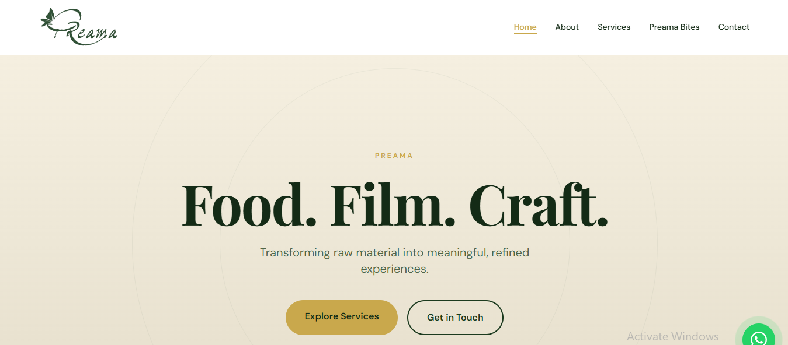

Preama.
A creative studio site for a multidisciplinary brand working across food, film, and craft. Editorial design with custom typography pairing and refined motion.
What it is.
Preama is a brand that moves between kitchens, film sets, and workshops. The site needed to hold all of that without collapsing into a generic portfolio. The result is a single-page editorial experience that treats each discipline with equal weight and lets the work breathe.

Design approach.
The typography carries the entire identity: a custom serif-and-sans pairing that shifts tone between editorial restraint and expressive warmth. Layouts are asymmetric and scroll-driven, with motion timed to feel intentional rather than decorative. Colour is used sparingly, allowing imagery and type to do the heavy lifting.
What was built.
A fully responsive site deployed on Vercel. The front-end is lightweight and fast-loading, built to prioritise visual fidelity on both mobile and desktop. Smooth scroll transitions, lazy-loaded imagery, and carefully sequenced reveal animations give the site a cinematic pace without sacrificing performance.